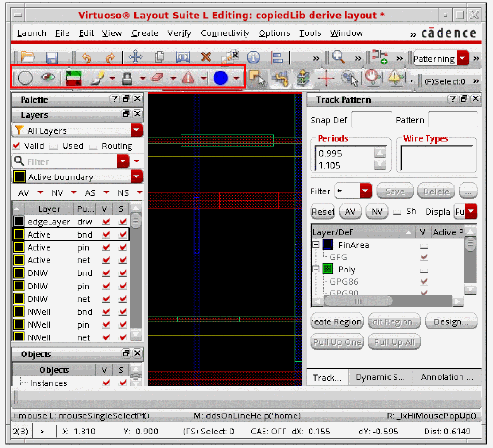

Using the Multiple Patterning Workspace
The Multiple Patterning workspace can be accessed by one of the following methods:
- Choose Window – Workspaces – MultiPatterning from the layout window menu bar.
-
Choose MultiPatterning from the drop-down list box in the Workspaces toolbar.
The layout window is configured with the assistant panes and toolbars that are useful for MPT designs, as shown in the figure below. The Multiple Patterning toolbar is highlighted in red in this figure.

For information on workspaces and how to customize them, see
Return to top